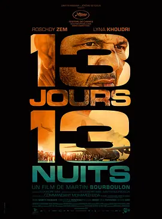

6.3
13个日夜
13 Days, 13 Nights
2025
法国
评分 6.3
导演:
马丁·布尔布隆
演员:
罗什迪·泽姆 / 琳娜·库德里 / 西瑟·巴比特·科努德森 / 克里斯托弗·蒙特内兹
类型:
剧情,动作,战争
剧情简介
喀布尔的天空还带着夏末的灰黄，城里的气氛却一夜之间塌陷。塔利班部队逼近首都时，法国大使馆被临时改造成一座孤立的堡垒，指挥官穆罕默德带着一支临时拼凑的队伍，守在院墙和大门后，清点名单、协调车队，还要随时接起来自巴黎的卫星电话。走廊里堆满行李和文件，电梯口挤着孩子、老人和外交人员，每个人都紧紧攥着护照和一张写着名字的纸。 随着机场成为唯一出口，时间被切成“还剩十三天”的倒计时。穆罕默德白天跑去和塔利班代表谈判路线和通行人数，夜里盯着监控画面，看车灯从黑暗中一排排驶来；身边既有熟悉程序的法国官员，也有熟门熟路的阿富汗协作者。有人坚持把家人塞进下一班车，有人悄悄撕掉旧工作证，只留下孩子的照片。窄窄的通道、被挤变形的铁门和喧闹的人群，把每一次上车都变成一场带着赌注的选择。 城外的枪声和爆炸时远时近，车队在路障前一再停下，士兵拎着喇叭疏散人群，又不得不把一部分人挡在铁丝网外。穆罕默德和同行的援助人员、记者、翻译在不同立场之间来回摇摆：是尽量多带几个人，还是保证下一趟车还能安全抵达？他们在紧闭的会议室里争论，在车厢里匆忙决定，在机场灯光下看着一个个名字被划掉。影片把大规模撤离拆成一次次具体的检查、放行和回头张望，让观众跟着这一支小队，在十三个日夜里体会恐惧、内疚与责任如何缠在一起，始终不提前给出他们最终要付出的代价，只把选择的压力留在当下。